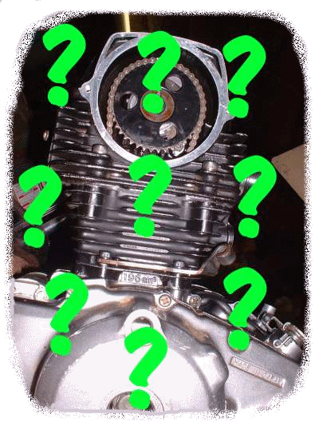
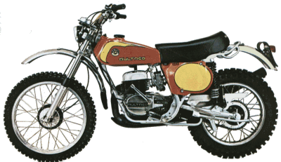
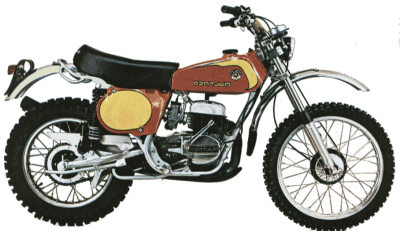

MAKING IT WORK WHEN YOU DON'T KNOW HOW
¶ Piddling means, among other things, to dawdle. It's also the word I use to describe the motorcycle repair technique I use when all else fails. When the way the shop manual says to do it fails. When the way that has done it in the past fails. When the way your buddies say always worked for them fails. When you have no idea as to what to do next, you just piddle with it. You play with it. You try different things that you don't think will work because, well, nothing else has worked either.
I'll give you an example. I'm trying to install a new tire on a lawn tractor. This is an old tractor that has been sitting for a long time. The tires were totally rotten, the wheels were rusted solid to the axles and would not come off. With the wheel still on the tractor, I was able to get the old tire off and the new tire on. Trouble was, the tire bead would not seat. I tried every trick I could think of to expand that bead and get it to seat. Now, I really wanted that wheel to work because the tractor was mine. I had several hundred dollars in it and I sure didn't want to put another seventy-five bucks into it for a new wheel. It would almost seat and then poosh, it wouldn't. I thought I could try one last trick. Spray some starting fluid in the tire and light it off. Theory being, the, burning, expanding, gas would seat the tie rim. But, I didn't. Yeah, your right, I'm getting old and turning into a real woose. I mean really, it probably won't blow up in my face... right? So I just piddle with it. I jiggle it. I wiggle it. After an hour or two, just for the heck of it, I hook a tire tool on the bead and almost, but not quite, pull it over the rim of the wheel. I do this all the way around the tire. I put some air to it, and bam, the bead seats. I never would have thought that that would do it, but it did. I just piddled with it.
Here's another example. Back in 1970 Harley Davidson set a world land speed record (265.492 mph). They used a Sportster engined streamliner. One of the men who worked on these engines was Warner Riley. He said that they were having trouble with the front cylinder over heating, even though it was set up the same as the rear cylinder. The front was running too hot but the rear was running just fine. He could not figure out WHY. They took the record, but blew two engines doing it. He took the engine home, set it on his work bench and started turning it over with a wrench, watching the valves work. He said he did this for what seemed like hours. Just turning it over and looking at it. He was just piddling with it.
Then it hit him. The front cylinder would fire and then immediately after the rear cylinder would fire. Because of the angle between the cylinders, there would then be a long time, relatively speaking, before the front cylinder would fire again. This allowed the fuel mixture to slow down a bit, before the front cylinder would fire again. When the rear cylinder's intake valve opened the fuel mixture in the intake tract would be going faster then when the front intake valve opened. This made the front cylinder run too hot. He found that if he angled the carburetor to the front cylinder by 2.5 degrees, both cylinders would run the same. No more over heating.
Bottom line? If nothing works, don't give up, just piddle with it and maybe, just maybe, Jesus will give you the answer.
"If any of you lack wisdom, let him ask of God,
that giveth to all men liberally, and upbraideth not;
and it shall be given him."

 |
 |
Copyright © 1999-2015 dansmc.com. All rights reserved.